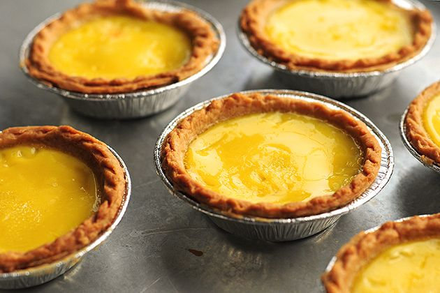

Hong Kong Style Egg Tarts
Creamy custard filled dessert.

This dish consists of an outer pastry crust filled with egg custard.
Ingredients
Custard Filling
- 4 eggs
- 3/4 cup water
- 6 tablespoons sugar
- 1/8 teaspoon salt
- 1/4 cup evaporated milk
- vanilla extract
Pastry Dough
- 2 cups of cake flour
- 115 g unsalted butter
- 1/4 cup powdered sugar
- 2 tablespoons egg
- 1/8 teaspoon salt
- vanilla extract
Steps
- For the pastry, in a large bowl, sift flour, sugar, and salt. Then add softened butter. Bring the mixture together with your hands, careful not to knead the pastry dough too much or you will make the pastry tough.
- Whisk the egg yolks and add the 2 tablespoons of beaten yolk to the flour mixture. Bring together until smooth. If the dough is too sticky, coating your hands with flour will help. Cover with plastic wrap and then refrigerate for 30 minutes, or until the dough is firm.
- To make the custard filling, melt sugar and salt with hot water. Mix until dissolved then let cool.
- Add the rest of the beaten egg yolk. Stir in sugar water and also evaporated milk (if adding vanilla, add now). Stir and combine everything well.
- Strain the filling to ensure no lumps. Chill in the refrigerator.
- Preheat the oven to 400˚F (200˚C.)
- Take the dough out and divide into 16 equal portions. Spray the tart pan with a light coating of oil. Take one portion of your dough and roll it into a ball and place in your tart shell. Press the shell into the pan with your fingers. Try to make the wrapper uniform in thickness and avoid a thick bottom. Repeat to finish all.
- Pour the custard filling into the shells until it is about 80% full. Bake for 15 to 20 minutes until the surface becomes golden brown and a toothpick can stand in the egg tart.
- Cool down for several minutes and then take the egg tarts out of the pan. Serve while still warm.
- Enjoy!